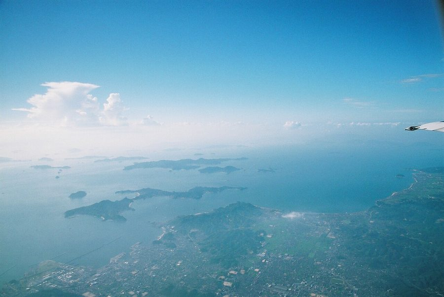
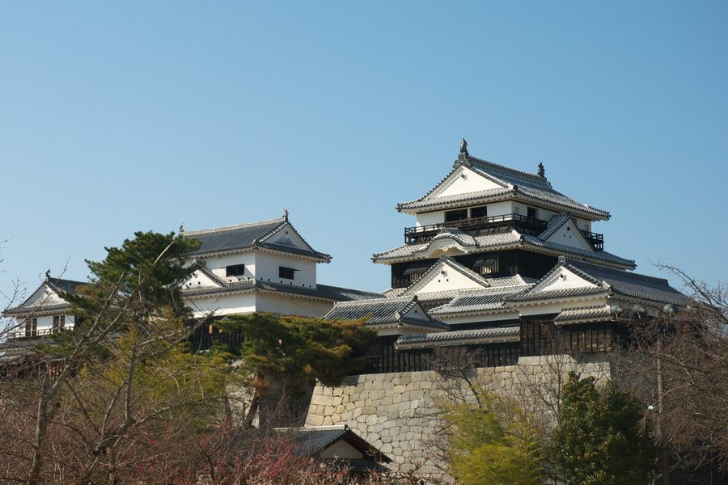
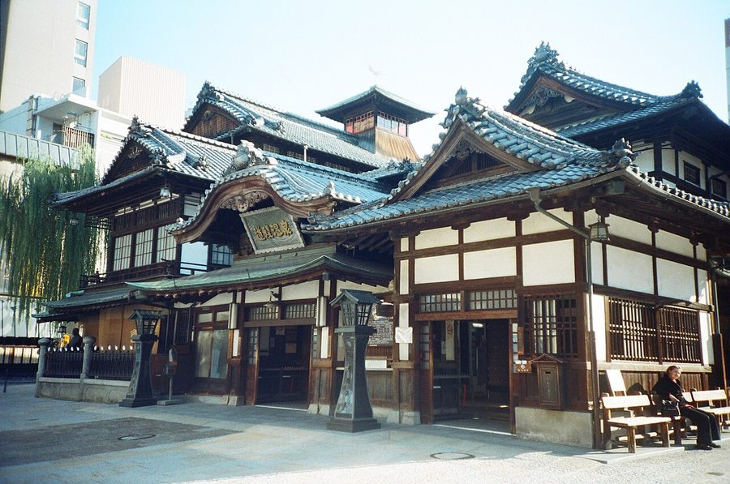
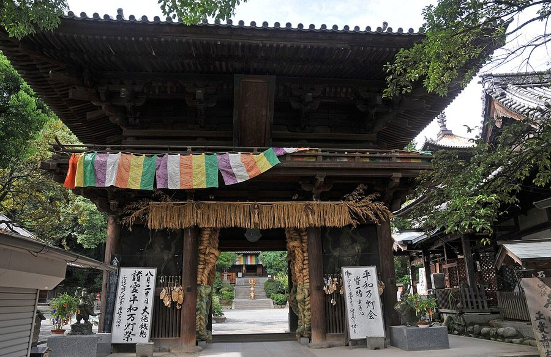

愛媛県松山市の日帰り温泉・銭湯・サウナ（45件）
寄り道スポット検索アプリ「ヨッテコ」の収録データから、愛媛県松山市の日帰り温泉・銭湯・サウナを営業時間・料金つきで一覧にしました（2026年8月時点）。
最も安いのは清水湯（400円）。最も遅くまで入れるのは道後さや温泉ゆらら 家族の湯（翌10:00まで）。朝風呂ならたかのこのホテル（5:00開店）。
愛媛県松山市はどんなまち？
数字で見る🔍愛媛県松山市
まちの横顔




- 地形と気候: 松山市は西に瀬戸内海（伊予灘および斎灘）に面しており、北と東は高縄半島の山々、南は四国山地の一支脈である皿ヶ嶺連峰に接しています。松山平野の大部分を占めるほか、三坂峠のすぐ下の山間地から旧・中島町の島嶼部まで広い面積を持ちます。気候はケッペンの気候区分で温暖湿潤気候（Cfa）に属し、年平均気温は16.8℃です。
- 歴史と文学: 松山城を中心に発展してきた旧城下町で、道後温泉で知られる古くからの温泉地です。俳人正岡子規や文豪夏目漱石ゆかりの地として、俳句や小説『坊っちゃん』『坂の上の雲』などで知られる文学の街でもあります。これらの観光資源を背景に「国際観光温泉文化都市」の指定を受け、「いで湯と城と文学のまち」をキャッチフレーズに掲げています。
- 都市の姿: 中四国では広島市・岡山市に次ぐ人口規模を持つ都市です。コンパクトシティ構想のもと、地方都市随一の繁華街である大街道や銀天街、四国唯一の地下街まつちかタウン、四国最大の駅ビルに入る商業施設など、様々な文化・商業施設が中心部に集まっています。近年は都心部で複合商業施設の建設や鉄道・高規格道路の整備が進み、四国最大都市としての再開発が進んでいます。
寄り道充実度（全国偏差値）
偏差値・順位は、ヨッテコ収録データ（2026年8月時点・26,033件）を市区町村別に集計した施設数の全国分布（1,728市区町村）から毎回算出しています。カードを押すとカテゴリ別の分析に切り替わります。
日帰り温泉から見た愛媛県松山市
市内の日帰り温泉は45件、全国29位タイ（上位1.7%）。——湯の選択肢は、全国の上位5%に入る。
- 露天風呂がある店は62%、全国水準（46%）の1.3倍。西は瀬戸内海に面し、北と東を高縄半島の山々、南を皿ヶ嶺連峰に囲まれた市。屋根のない湯船が当たり前、という土地柄なのでしょうか。
- 89%の店が天然温泉です。全国水準は67%です。道後温泉で知られ、「国際観光温泉文化都市」の指定を受ける温泉地。お湯があること自体が出発点になっているまちです。
- 69%の店にサウナがあります。全国水準は52%です。年平均気温16.8℃、熱帯夜が年26.2日にのぼる温暖湿潤気候の市。日常づかいのスーパー銭湯型が数を押し上げる構成です。
- 夜の遅い時間に入れる店は71%。全国の40%を上回ります。夜型の寄り道がしやすいまち、ということになります。
- 入浴料の中央値は850円でした（判明39件）。全国の650円と比べて31%高い水準です。設備や湯の質を含めた、この土地の相場ということになります。
出典: 施設データ=ヨッテコ収録データ（26,033件・2026年8月時点）。偏差値・全国順位・全国水準は全1,728市区町村の分布から毎回算出。 / 人口=総務省「住民基本台帳に基づく人口、人口動態及び世帯数」（2026年1月1日現在） / 面積=国土地理院「全国都道府県市区町村別面積調」（2026年4月1日時点） / 森林率=農林水産省「2025年農林業センサス（農山村地域調査）」市区町村別林野率（2025年、林野率（林野面積÷総土地面積）） / 年平均気温=気象庁「平年値（1991-2020年）」。市区町村の代表点（国土交通省「大字・町丁目レベル位置参照情報」）から最も近い観測点の値 / まちの解説=日本語版Wikipedia「松山市」（https://ja.wikipedia.org/wiki/松山市、2026年8月21日取得）より作成（CC BY-SA 4.0） / 写真=Wikimedia Commons（各キャプションに作者・ライセンスを記載）
曜日別の営業施設数
| 月 | 火 | 水 | 木 | 金 | 土 | 日 |
|---|---|---|---|---|---|---|
| 44 | 45 | 44 | 45 | 45 | 45 | 45 |
月・水曜日が最も休みが多く（各1件が定休）、年中無休は43件です。※営業時間データのある45件で集計
入浴料金の分布（大人）
| 500円以下 | 8件 | |
| 501〜800円 | 11件 | |
| 801〜1,200円 | 6件 | |
| 1,201円以上 | 14件 |
料金が確認できた39件で集計。
施設一覧
| 施設 | 営業時間 | 料金（大人） |
|---|---|---|
| KKR道後ゆづき 天然温泉露天風呂サウナ 奥道後源泉からのお湯で、泉質は道後でも屈指の美肌の名湯。露天風呂、サウナ、地下にありながら外の光を十分に採り入れた大浴場… | 15:00〜21:00 | — |
| SAUNA ALKU サウナ 松山一番町に位置する高温・低温の2つのサウナ室と水風呂、畳と椅子の休憩エリアを備えたサウナ専門店。南部鉄器の急須で湿度管… | 16:00〜24:00 ※曜日により異なる | 2,000円 |
| Spa Resort 道後 ホテル葛城 天然温泉露天風呂 日本最古の道後温泉の引き湯を使用。浮世絵風呂の白鷺の湯と瀬戸内の景色が広がる大師の湯の2種類の大浴場を朝夕入れ替えで楽し… | 15:00〜21:00 | 1,500円 |
| たかのこのホテル 天然温泉露天風呂サウナ | 05:00〜24:00 | 800円 |
| たかのこの湯 天然温泉露天風呂サウナ 弘法大師が発見したとされる由来をもつ温泉で、地下1200mから湧き出る豊富な湯量と新源泉が蘇らせた施設。複数の浴槽タイプ… | 05:00〜25:00 | 600円 |
| ていれぎテントサウナ 湯婀〜YUA〜 天然温泉サウナ 松山初のテントサウナ施設。フィンランド式のテントサウナで、プライベート空間で焚き火を楽しみながらサウナが楽しめる。 | 11:00〜20:00（水休） | — |
| オールドイングランド 道後山の手ホテル 天然温泉露天風呂サウナ 道後温泉の引き湯を使用。男湯と女湯それぞれにサウナと水風呂を備え、セルフロウリュもできる。湯上がりは肌のしっとり感が高く… | 06:00〜23:00 | 1,650円 |
| カンデオホテルズ 松山大街道 天然温泉露天風呂サウナ 松山市のカンデオホテルズ。最上階にスカイスパを備え、展望露天風呂とサウナシュラン受賞のサウナが特徴。 | 18:00〜23:00 | 1,400円 |
| ホテル椿舘本館 天然温泉露天風呂 | 09:00〜18:00 | — |
| リブマックスリゾート奥道後 天然温泉露天風呂 奥道後温泉の美人の湯として知られており、開放感ある広々とした温泉浴場で心も身体もリフレッシュできる施設。全客室に檜露天風… | 06:00〜11:00 ※曜日により異なる | 1,200円 |
| レフ松山市駅 天然温泉露天風呂サウナ | 09:00〜18:00 | — |
| 久万の台温泉 天然温泉露天風呂サウナ | 07:00〜24:00 | 600円 |
| 伊予の湯治場 喜助の湯 天然温泉露天風呂サウナ | 05:00〜26:00 | 850円 |
| 南道後温泉 ていれぎの湯 天然温泉露天風呂サウナ 地下1200mから自噴する極めて稀な源泉を使用。四国でも成分が最も豊かな療養泉として知られ、温泉療法満足度も高い。 | 06:00〜24:00 | 680円 |
| 古川温泉 湯楽 天然温泉露天風呂サウナ | 09:00〜23:00 | 500円 |
| 大江戸温泉物語 道後 天然温泉露天風呂サウナ | 07:00〜10:00 ※曜日により異なる | 1,200円 |
| 天山トロン温泉 露天風呂サウナ | 12:00〜34:00 | 600円 |
| 天然温泉と日帰り家族風呂 媛彦温泉 天然温泉露天風呂サウナ 地下1000m からの天然温泉で、大浴場と全20室の家族風呂（露天風呂付き）を備えた日帰り施設。 | 09:00〜31:00 | — |
| 奥道後 壱湯の守 天然温泉 West Japan's largest open-air hot spring bath complex set al… | 15:00〜20:00 | 1,100円 |
| 寿温泉 天然温泉サウナ 松山城ロープウェイ近くの街中の銭湯。奥道後からの温泉で肌もつるつるになる。銭湯なのに温泉という珍しい施設。 | 07:30〜23:00 | 510円 |
| 新開温泉 天然温泉サウナ 松山市内の小ぶりな温泉銭湯。 | 14:00〜22:30 | 500円 |
| 星乃岡温泉 天然温泉サウナ 昭和34年創業。地下1,000メートルから湧き出るアルカリ性単純温泉の美肌の湯で、古き良き歴史を感じられる温泉。多数のバ… | 05:30〜23:30 | 750円 |
| 星乃岡温泉 スパ星乃岡 天然温泉露天風呂サウナ スパ星乃岡は露天風呂、サウナ、岩盤浴や泳げるお風呂など様々なタイプの家族湯をご用意している。地下1000mから湧き出る美… | 10:00〜16:30 | 3,200円 |
| 星乃岡温泉 千湯館 天然温泉露天風呂サウナ Large-scale hot spring resort in Matsuyama offering diverse … | 06:00〜24:00 | 850円 |
| 東道後のそらともり 天然温泉露天風呂サウナ pH9.2の高アルカリ性美肌の湯として古くから地元に愛される。鎮守の森に囲まれた環境で、電気風呂や複数の浴槽タイプが楽し… | 05:00〜25:00 | 1,350円 |
| 東道後温泉 久米之癒 天然温泉露天風呂サウナ 浄土寺に隣接し、安政時代の地震により湧出したと伝えられる東道後温泉の源泉を使用。四十度のアルカリ性単純温泉で、肌にやさし… | 11:00〜33:00 | 600円 |
| 松山ニューグランドホテル 天然温泉 ゆるりん 天然温泉 City hot spring in central Matsuyama drawing 100% flowing so… | 15:00〜24:00 | 1,000円 |
| 権現温泉 天然温泉サウナ 美しい自然に囲まれた静かな場所にある温泉。肌に優しいアルカリ性単純泉で、ジェットバス、気泡湯、薬湯、サウナなど多彩な湯船… | 10:00〜22:00 | — |
| 水晶湯 サウナ | 15:00〜21:00 | 500円 |
| 清水湯 サウナ 松山市内の銭湯。シルバーデー（毎週金曜日）65歳以上は半額。 | 14:30〜21:30 | 400円 |
| 潮の香りの天然温泉 シーパの湯 天然温泉露天風呂サウナ | 10:00〜23:00 | 700円 |
| 白泉湯 サウナ | 16:00〜21:00 | 500円 |
| 竹山荘 天然温泉 石手川ダムのさらに奥の山里に位置し、四季折々の自然の幸が味わえる。敷地内の釣堀では釣ったマスをその場で刺身、塩焼き、から… | 10:00〜21:00 | 450円 |
| 谷町リゾート ゆとりあ温泉 天然温泉サウナ 谷町リゾートの天然温泉施設。24時間営業の大浴場と複数の家族風呂、岩盤浴が揃っている。 | 12:00〜34:00 | 450円 |
| 道後さや温泉 ゆらら 天然温泉露天風呂サウナ 松山空港やJR松山駅から車で約10分、朝霧湖の湖畔にある。地下1,000メートルから湧き上がる天然温泉で、全浴槽が天然温… | 07:00〜24:00 | 750円 |
| 道後さや温泉ゆらら 家族の湯 天然温泉露天風呂 本館大浴場とは別に、完全プライベート型の家族向け温泉施設。内湯と露天の2タイプから選べ、家族連れやグループでのご利用に最… | 16:00〜34:00 | 3,900円 |
| 道後プリンスホテル 天然温泉露天風呂 館内湯めぐり「プリンスの湯めぐり」で道後温泉を楽しめる。大浴場ゆのか、露天風呂ゆのね、貸切露天風呂ゆらくの3つの浴場で多… | 15:00〜23:30 | 1,650円 |
| 道後友輪荘 天然温泉 完全バリアフリー対応の施設。道後温泉源泉の引き湯を使用しており、ゆったりとした完全バリアフリーのお風呂で日本最古の道後温… | 14:00〜20:00 | 4,550円 |
| 道後温泉 ふなや 天然温泉露天風呂サウナ Historic 3,000-year-old Dogo hot spring with two main baths … | 05:30〜22:00 | 1,650円 |
| 道後温泉 ホテル古湧園 遥 天然温泉 道後温泉本館や松山城を一望する展望大浴場からの絶景が自慢。日本最古の湯をゆったりと心ゆくまで堪能できる施設。 | 13:00〜21:00 | 1,800円 |
| 道後温泉 椿の湯 天然温泉 1953年開設の松山市民の「親しみの湯」として多くに愛されている公衆浴場。2017年にリニューアルオープンし、道後商店街… | 06:30〜23:00 | 500円 |
| 道後温泉 花ゆづき 天然温泉露天風呂サウナ | 15:00〜21:00 | 1,500円 |
| 道後温泉別館 飛鳥乃湯泉 天然温泉露天風呂 | 06:00〜23:00 | 610円 |
| 道後温泉本館 天然温泉 1894年創設の日本最古の温泉施設。歴史と伝統が息づく国の有形文化財。複数の浴室と貸切室が備わる。 | 06:00〜23:00 | 1,300円 |
| 道後舘 天然温泉露天風呂 | 12:00〜24:00 | 1,800円 |